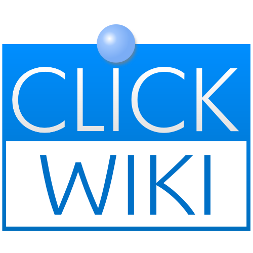
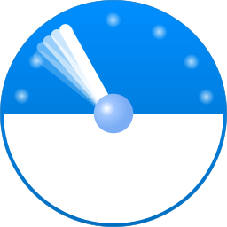

Exporters
Exporters Extensions
Extensions Interface
Interface Chowdren
Chowdren ClickStore
ClickStore Bug Tracker
Bug Tracker| |
This is an archive. |
| See the new ClickWiki at https://clickwiki.net. This version is just an archive for the purposes of migrating content to the new structure. |
ClickWiki:About
What's this?
ClickWiki is a community-driven Wiki all about Clickteam. We'll cover their products, exporters, extensions and even more with in-depth information. Our aim with the Wiki is to provide fully documented pages that make finding answers simple to find. We strike for detail to enable you to discover more possibilities from Fusion and your projects. We will keep the Wiki alive as long as possible with periodic updates and will be as transparent as possible with our operations.
The Wiki acts as a bridge between the help documentation, and a central source for tips and tricks and frequently asked solutions buried in the Community Forums.
Inspired by our "spiritual" predecessor.
During 2010-2012, there was an official encyclopedia for Clickteam named FusionWiki. However, due to an unforeseen update failure, the Wiki was taken offline permanently and had lost all of its content. That can't happen again!
We're not the first.
This Wiki isn't the first to create and write up about Clickteam's products and features. Other Wikis do exist but may be in other languages, for specific communities or for different purposes. Coincidentally, the name "ClickWiki" was used from around 2007-2008 referring to another vanished Wiki, but this won't be referring to this one.
You can think of this Wiki as the spiritual successor. It's completely new, kickstarted by different clickers and aims to preserve the knowledge and hours poured to build it.
Timeline
| • 16th February 2015 | Founded and initially hosted by clicker robinkooli. |
| • 4th March 2015 | Acquired  clickwiki.net as the domain name. |
| • 10th April 2015 | Switched to reliable servers. |
| • 20th May 2015 | Server migrated to clicker lh37 (current host) with paid hosting. |
| • 25th May 2015 | |
| • 1st September 2015 |  stats.clickwiki.net opens, providing an overview of statistics. |
| • 5th December 2015 | stats.clickwiki.net closes. It's now the Check-up page. |
| • 14th April 2017 | The ClickWiki Discord server is created, providing an easy way to view Wiki updates and chat about the Wiki. |
And here we are... present day.
Main Contributors
Most of the contributors are just regular community members from Clickteam's Community Forums and we'd like to say, thank you!
| lh37 | Host and Wiki Administrator. |
| robinkooli | Domain Registrar and Wiki Administrator. |
| |
Clickteam. |
| ProdigyXable | Community Moderator. |
| Advaith | Clicker. |
Computerized lists are available:
This section will be updated when applicable to give credit from considerable contribution efforts.
For contributors who help fund the Wiki financially, see the Donations page.
Under the Hood
- Powered by MediaWiki.
- Hosted with HostPresto! (based in the UK)
- Optimised through Cloudflare.
- Analytics, stats and logs are provided by:
- Google Analytics
- Cloudflare
- Awstats (via host)
These are used to help identify which areas of the Wiki are being visited, so we can increase focus on those areas. See the Privacy Policy on how this data is used.
FAQs
Are you endorsed by Clickteam?
No. Besides being customers and users of their product. We are not associated with any of Clickteam. This Wiki is purely community ran and relies on your contributions to reach its full potential. Even members of the Clickteam have contributed and promoted our Wiki! You may have read about us in Fused!
What if you go offline unexpectedly?
In event that a temporary outage caused the Wiki to go offline, be rest assured we'd like to get it back up and running as quickly as possible. In case something disastrous happens, our remote and local backups will allow us to revert back to normal operations.
What if this Wiki gets abandoned?
If, in the unlikely event the Wiki can no longer be hosted or properly maintained, the host will transfer the Wiki to somebody else to keep on going.
I'm unable to contribute the time. How else can I support you?
That's perfectly understandable. You can show your appreciation and support by following us on social media, bookmarking, spreading the word and visiting us!
If you have an RSS reader, you can also track all of the recent changes with this feed.
Of course, running a Wiki isn't truly free. If you would like to support the running costs in the past and yet to come, you are very welcome to leave a donation.
Contributions Welcome!
Anyone registered can contribute to the Wiki. To prevent spam and bots, we require you to register. Feel free to help out, and we'd like to thank you for your time and contributions. Donations to support the running costs (big or small) are greatly appreciated if desired.
To get started, register an account on the Wiki and see the welcome page for documentation, including common syntax help if this is your first Wiki, and our special templates to enhance information (such as the Event Editor and Event List).
Talk pages for any page can be accessed by clicking the "Page" button in the top-left (which appears for logged-in users.)
If you wish, there is a Recent Changes RSS Feed that can keep you up-to-date with the last 100 contributions from the last 30 days.
Feedback Welcome!
We would be pleased to hear from you. If you'd like to tell us how we're doing, you can reach us here:
Thank you for your interest!